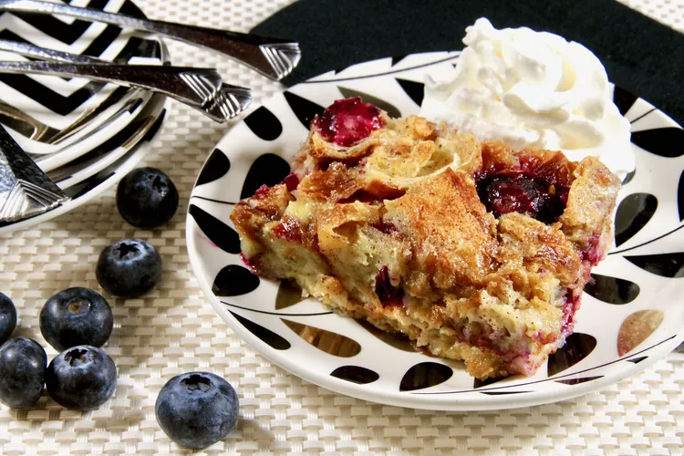

Croissant

Ingredients
- 7 large croissants, cut into large cubes
- cooking spray
- 1 cup blueberries
- 6 large eggs
- 2 cups whole milk
- 1 cup heavy cream
- 3/4 cup white sugar
- 1/2 stick unsalted butter, melted
- 1 teaspoon almond extract
- 1 teaspoon ground cinnamon
- 1/4 teaspoon salt
Steps
- Preheat the oven to 225 degrees F (110 degrees C). Line a baking sheet with parchment paper and spread out croissant cubes on top.
- Bake in the preheated oven until croissant cubes are very dry, 30 to 35 minutes. Turn off the oven and cool cubes slightly.
- Lightly spray a 9x13-inch baking dish, add dried croissants, and evenly distribute the blueberries among the croissant cubes.
- Whisk eggs together in a large bowl. Add milk, heavy cream, sugar, butter, almond extract, cinnamon, and salt; whisk until well blended. Pour the custard mixture over the croissants, and push croissant cubes down with the palm of your hand or a large spatula to fully submerge. Cover the dish and refrigerate for 2 hours to allow the bread to absorb all of the custard.
- Preheat the oven to 350 degrees F (175 degrees C).
- Bake in the preheated oven, uncovered, until the top is puffed and golden and the custard is set in the center, 40 to 45 minutes.
- Remove the bread pudding to a rack and let cool for 10 minutes.